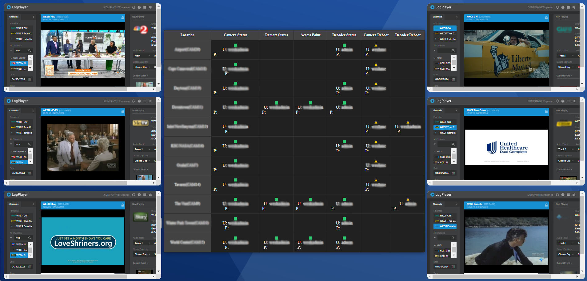
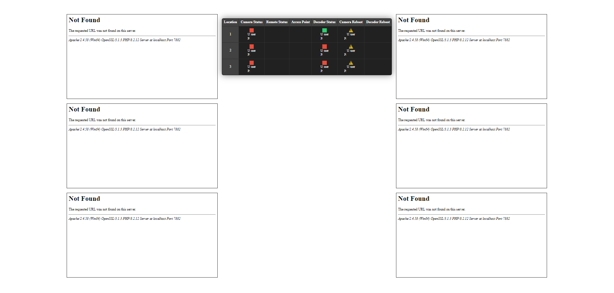

Connor Panso
Questions or suggestions, note to cpanso at outlook dot com
BOI (BroadcastOps Interface) is all in one web interface to monitor live camera feeds in real time and also preview the channels in which your station is broadcasting. The system is also a web-based interface for monitoring the connectivity status of various devices. It provides a visual representation of the network status of the cameras, with the ability to directly manage these devices through the interface. The system updates in real time, ensuring that the information is current. This setup could be used for network administration in eviroments where real-time monitoring of devices statuses is critical.
Depending where your station collects their live feed, you would want to switch that into the url for the specified iframes. The color of the status blocks change to red if the ip doesnt ping back. I utilized Asynchronous JavaScript and XML (AJAX) inorder to recieve constant pings without the need to refresh the page.
You can costumize the source code the way's you see best fit your needs.
Here is a screenshot showcasing what you could have your version of BOI do for you.
Unedited version
There are 2 part's, a PHP frontend ('index.php') and a server side script ('ajax.php').
index.php
The data initialization works in a way that with the set of cameras and the power distribution units are defined as a array of objects, each contains properties as in 'ip', 'user', 'pass', 'apIp', etc. The objects hold all ncessary information to interact with each device.
The way the status checking works is that it utilizes AJAX request to periodically (every 5 seconds) ping the devices IP's to check the connectivity status. This is done by calling the 'pingIPs' function, which then uses 'updateText' to handle the AJAX logic.
On page load ('window.onload'), the script populates the table with data from the devices. Every 5 seconds, the 'pingIPs' function sends out AJAX requests to check the status of each device and updates the UI accordinly.
ajax.php
Recieves a device IP ('domain') as a GET parameter. Pings the provided IP. Returns a "1" for online or "0" for offline, whcih the JavaScript logic then uses to update the UI.
The code can be found on my Github